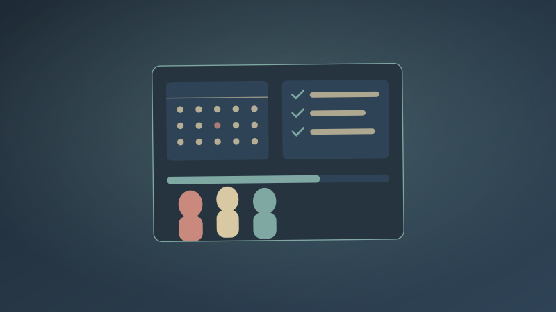
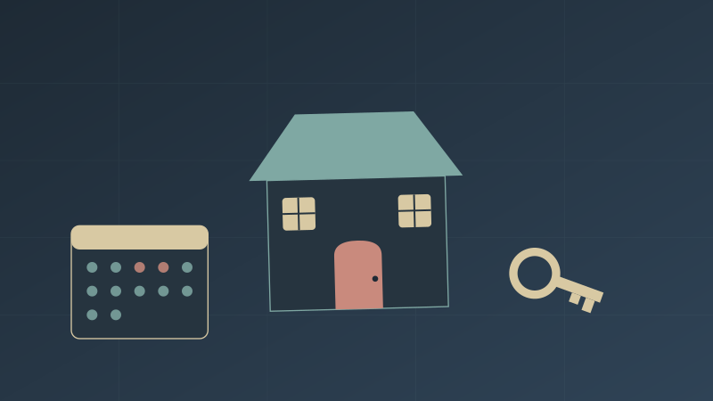
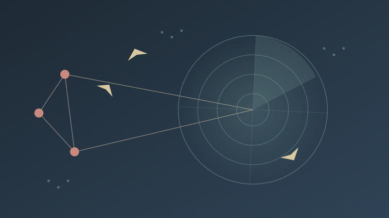

Code with purpose. Innovate with vision.

Training Process Management System
A web-based system for managing training processes, covering users, training sessions, and registrations. I designed and built it using Angular, Node.js, Express.js, and MongoDB, including the administrative management features. The result is a working system where an organization can track trainees, sessions, and sign-ups in one place.

Guest House Management Application
A web application for managing bookings at a guest house. I built the booking and availability features and designed the user interface, using HTML, CSS, Bootstrap, and JavaScript. The result is a responsive application where a guest house can check availability and manage reservations.

Distributed Client-Server Application
A distributed client-server application that simulates an air traffic control system. I implemented the communication between client and server using Java RMI, applying client-server and distributed systems concepts. The result is a working simulation showing how multiple clients communicate with a central server at the same time.